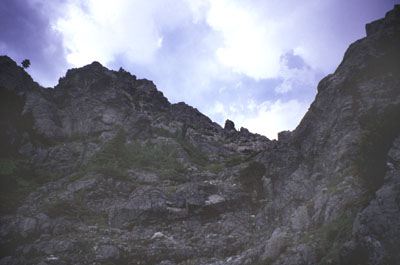
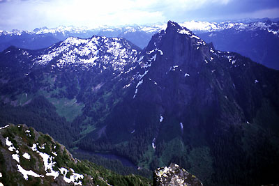
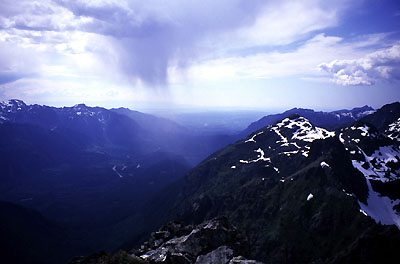
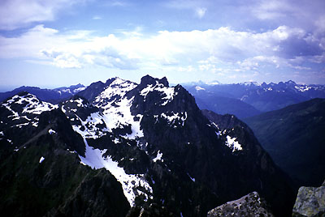
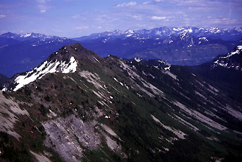

Merchant Peak
Southwest Gully
June 19, 2004
<font size=+3>It was time </font> to climb Merchant Peak. While I grilled a steak Friday night, our cat Quincy zoomed out of the house and into the dark woods with a shriek. We didn’t sleep well, knowing his personality too well. An indoor cat, he’d never been outside, and he was prone to panic attacks that caused him to hide under a bed for days. Would he find his way home?
In the morning I walked the neighborhood mournfully, half expecting to see his soft orange body on the side of the road. House chores were impossible. I had to get away for a while.
Where’s my crampons? Crap, maybe they are at Theron’s house. I didn’t want any bout of hard snow to turn me around, so I wore my big clunky boots and took the heavy steel crampons. What a mistake I would often rue on hot dusty slopes! But that’s later.
Two hours later, I’m clomping up a boulderfield in the woods, wondering how such a mature forest could be covered in 4 feet of rocks. There must have been a really dark and stormy night long ago. Sweat is dripping off of me like I’m doing sit ups in a clothes dryer. Note to self - 1 pm starts on south facing low elevation hillsides are inferior. My food was a package of salami, turning from a healthy red to gray in a matter of minutes. Icch.
I passed a waterfall on the left, then another one on the right. This one gave me pause, because I had to do some tricky slab climbing that I thought would be hard coming down. Again I cursed my boots. Blocks of snow dripped in the gully, creating platforms suspended high above the stream and deep caves, daring you to walk on them. Was this the kind of hell Quincy was experiencing?
Above the waterfall, the gully became steeper, eventually pushing me upslope on the left to crumbling dirt. A metric ton of material was displaced into the water thanks to my steps and the smell of cordite filled the air. I was kind of embarassed about the noise, I hoped no cats were trying to get home across the gully. My beta printout said to look for a cave on the right, and find a trail into the cave. Once in the cave, the route gained a degree of remoteness. Can I find my way back from here? Some bushy dirt slopes led up to the right. Mt. Baring kept a watch on me, and the blue sky clouded up. I emerged from a fight with an alder tree on high rock above a waterfall. Time for some gray-green salami! Icch.
Now I was confused, I should have brought a map, because there was a summit on the right and one on the left. The left looked pointier. I climbed polished slabs between two streams and with a sense of deja vu, made yet another traverse from brush onto high rock above a waterfall. I left a cairn here, sure that most cats would find all this too hard to reverse. Another stomp in a loose gully brought significant change: I had reached the broad heather fields of the south face, peopled with outcrops of solid rock. A cool breeze evaporated my protective sheen of sweat. I decided on the left summit, and worked up the steep heather vaguely in that direction. Sometimes I climbed on rock, making moves I worried about reversing, sometimes I grasped heather with both hands and pulled over a mossy seep. Usually I walked steeply uphill. The wind increased and I heard a plane that I thought was thunder. Then I heard real thunder, and noticed it wasn’t so sunny anymore.
Scootling to the ridgecrest, I had my first views of mountains to the north. Continuing up a snowfield, I was briefly pleased with heavy boots, but still much the worse with bitterness. I finally used my ice axe 100 feet below the summit. I admired a huge snow cornice overhanging the north side, pleased that my tracks had unwittingly stayed well back of it, for it was dripping copiously. How could I set it off? Losing interest, I scrambled fine rock to the summit which had a cairn, a register, and pastoral views of sheets of rain to the west and south. There was lightning over Mt. Daniels, and Rainier was hidden by black cloud. The normal route to Gunn Peak was free of snow, a great contrast from two years before when Peter and I used it for our climb. Del Campo, Whitehorse, Sloan and Glacier Peak loomed to the north. I tried to imagine where Theron and Robert were on their traverse above Monte Cristo. Townsend Mountain looked attractive: high, broad and gentle, while the cliffs of Mt. Baring threw out a challenge, rising from a complex mulch of steep brush, cliffs and trees.
10 minutes was enough today, I headed down at 4:30, soon experiencing the real tedium of a snow-free Merchant Peak climb. Walking down steep slopes for almost 4000 feet is a real “knee workout.” I found better ways around obstacles on the heather slopes, then lowered myself down streambeds of rotten rock, turning right at waterfalls. The slopes above the cave set a real standard for the absolute steepest angle you can “walk” on. I had to place both hiking poles below me, lower myself enough to create an edge with a boot sole, balance carefully while repositioning my poles and repeat. Dirt and rock clattering down the hill all the while. Fat raindrops appeared as I muddled through the cave, and the rock grew wet as I clattered down to a nervous appointment with the upper waterfall. I was able to stay in brush for most of it, but finally had to contemplate downclimbing the insecure slabs I’d come up. Not trusting my boots on the wet rock, I delayed the inevitable by noticing something man-made. Crabbing over to it, I discovered a rappel sling around a boulder. “Great,” I thought. “Wish I could rappel.” Careful moves got me down foot by foot. Eventually I sat on my butt, using my hands to find edges under the moss. I realized I might slide, but would probably escape with minor cuts and bruises. Once I lost control, but somehow steered right to a lower angle bench. For the last ten feet, I slid unhappily, then got up cursing. At least I was done with the difficulties!
I took off shoes and drank water above the lower waterfall, happy for a break after the tense work above. Would my cat be at home?
Below the first waterfall I was flummoxed. I hadn’t noticed that two identical rocky gullies joined at it’s base. Which one did I come up? A poor guesser, I chose the right one. Continuing smugly down for a few hundred feet, I realized I’d err’d when my road choked off in Devil’s Club and slide alder. Climb back up? No way! I bashed into the jungle on the left, aiming down and left where I’d either find my gully or thrash all the way down to Barclay Creek. Not my brightest idea.
The many vines and thorns tried to tear me limb from limb, refusing to let go of a handy leg or ice axe poking above a pack. After an ocean of damp green spirits I reached big timber which is thankfully free of thorns. It was fun walking where no one had ever walked, or at least I thought that until I saw a pile of rocks that looked suspiciously man-made. Two rocks, one on top of the other, but arranged kind of artfully. Now three rocks we know nature doesn’t do. Eventually I reached the proper rockslide and followed it down to the trail. A long flat mile saw me out to the car.
Quincy began meowing outside around midnight. Our looks with a headlamp scared him away. By 2 am, he gave up and meowed over and over, coming to the screen door and pawing at it desperately, somehow missing the fact that it was open enough for him to slink in. Kris opened it all the way, and he rushed in and down to his hiding place underneath the bed. Praise be!
|
 |
|
 |
|
 |
|
 |
|
 |
{kind=link}
{kind=link}
{kind=link}
{kind=link}
{kind=link}